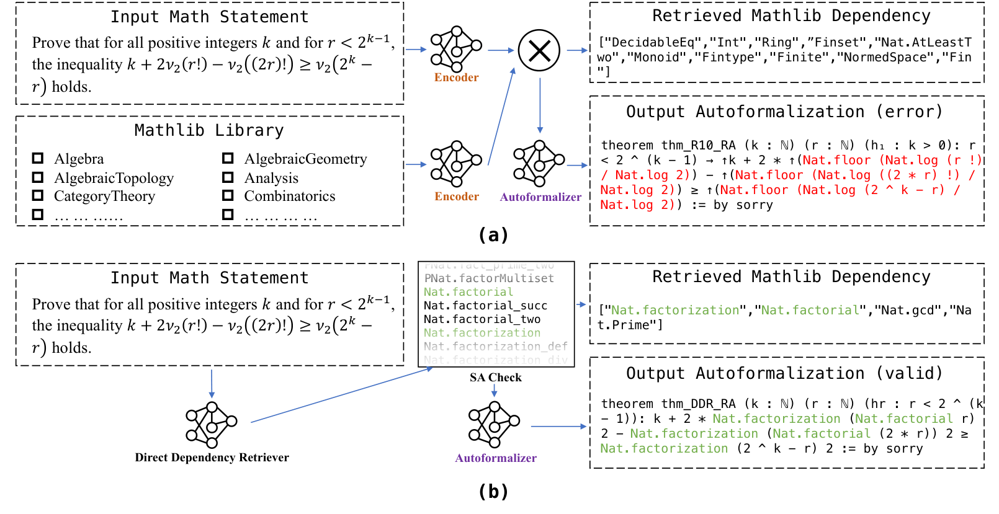
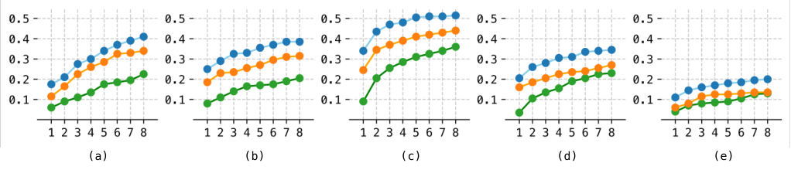
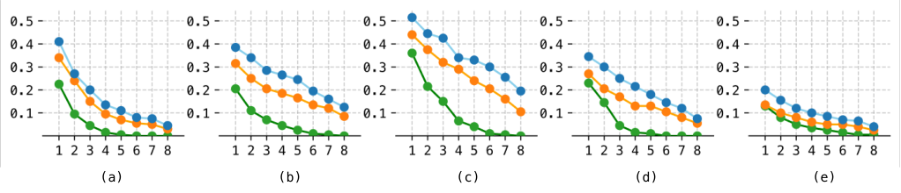

Retrieves Lean 4 Mathlib dependencies for statement autoformalization, verifying candidate names against Mathlib via suffix arrays and checking outputs with Lean4 typechecking and BEq.
Abstract
The convergence of deep learning and formal mathematics has spurred research in formal verification. Statement autoformalization, a crucial first step in this process, aims to translate informal descriptions into machine-verifiable representations but remains a significant challenge. The core difficulty lies in the fact that existing methods often suffer from a lack of contextual awareness, leading to hallucination of formal definitions and theorems. Furthermore, current retrieval-augmented approaches exhibit poor precision and recall for formal library dependency retrieval, and lack the scalability to effectively leverage ever-growing public datasets. To bridge this gap, we propose a novel retrieval-augmented framework based on DDR (Direct Dependency Retrieval) for statement autoformalization. Our DDR method directly generates candidate library dependencies from natural language mathematical descriptions and subsequently verifies their existence within the formal library via an efficient suffix array check. Leveraging this efficient search mechanism, we constructed a dependency retrieval dataset of over 500,000 samples and fine-tuned a high-precision DDR model. Experimental results demonstrate that our DDR model significantly outperforms SOTA methods in both retrieval precision and recall. Consequently, an autoformalizer equipped with DDR shows consistent performance advantages in both single-attempt accuracy and multi-attempt stability compared to models using traditional selection-based RAG methods.
Problem
Statement autoformalization into Lean 4 often fails because models hallucinate Mathlib definitions and theorems. Existing embedding-based retrieval of library dependencies has low precision and recall and does not scale with growing datasets.
Approach
Direct Dependency Retrieval (DDR) has an LLM generate candidate Mathlib dependency names directly from the natural-language statement. A suffix-array check (SAC) then verifies whether each candidate exists in the concatenated Mathlib item list, classifying matches as exact, partial, or none. SAC was also used to build a dependency retrieval dataset of over 500,000 samples from FineLeanCorpus, on which a DDR model was fine-tuned. The retrieved dependencies are supplied as context to autoformalizers, whose outputs are evaluated with Lean4 typechecking and BEq semantic checks.

Figure 1: Comparison of two paradigms for formal dependency retrieval. The v {}_{2}(\cdot) in input indicates 2-adic valuation. (a) Select-based retrieval using embedding cosine similarity: both the input statement and library items are encoded into embeddings, and the top-k items with highest cosine similarity are retrieved as dependencies. (b) DDR generates potential dependencies based on contex
Results
DDR reaches roughly 0.83–0.91 precision and 0.82–0.92 recall across difficulty levels. General LLMs used via ICL score about 0.15–0.54, and embedding top-k retrieval scores below 0.27. Autoformalizers equipped with DDR achieve higher single-attempt accuracy and more stable multi-attempt pass@k than those using ICL or no retrieval.

Figure 4: LLM efficiency across multiple attempts. Subplots (a–e) correspond to the performance of DeepSeek-R1 on datasets Diff01, Diff23, Diff45, Diff67, and Diff89, respectively. Each subplot illustrates the intermediate pass@k score ( y axis) out of 8 attempts using BEq verification, k range from 1 to 8 ( x axis). Dependency retrieval method: DDR (blue) ; ICL (orange) ; N/A (green) .

Figure 3: LLM consistency across multiple attempts. Subplots (a–e) correspond to the performance of DeepSeek-R1 on datasets Diff01, Diff23, Diff45, Diff67, and Diff89, respectively. Each subplot illustrates the proportion of problems ( y axis) for which at least k (from 1 to 8, x axis) out of 8 attempts successfully pass the BEq verification. Dependency retrieval method: DDR (blue) ; ICL (orange)